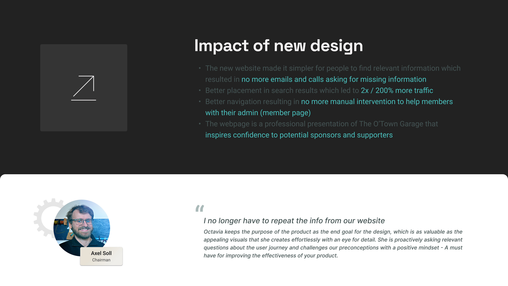
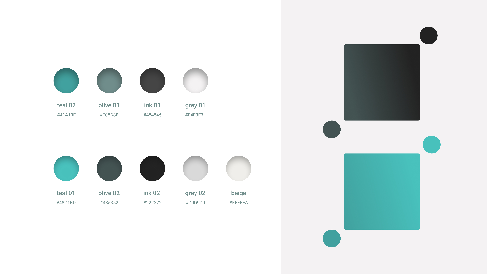
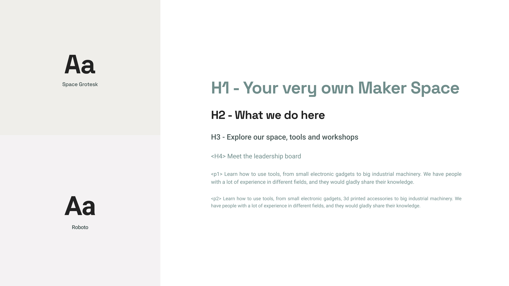

Website design for a community makerspace—showcasing tools, membership, and events with a clear, welcoming digital presence.
Project Summary
I designed the website for O'town Garage Makerspace, a community workshop where makers access tools, training, and shared space. The work covered brand-aligned UI, responsive web and mobile layouts, wireframes through high-fidelity screens, and visual language that explains membership, facilities, and how to get involved. Outcomes include 20% more trafic on the website and 10% more bookings for workshops.
🇩🇰 O'town Garage Makerspace
A makerspace offering tools, workshops, and community for builders and creators. The website needed to communicate what the space offers, build trust with new members, and make it easy to explore services on desktop and mobile.



"I no longer have to repeat the info from our website. Octavia keeps the purpose of the product as the goal for the design, which is as valuable as the appealing visuals that she creates. She is proactively asking relevant questions and challenges our preconceptions with a positive mindset - A must have for improving the effectiveness of your product."
Marketing site and webshop for an EdTech startup.
Research-led intranet redesign for a large university.
Tokens, components, and Storybook for a consistent Nabogo UI.
UX strategy and onboarding flow improvements for Nabogo carpoolers.